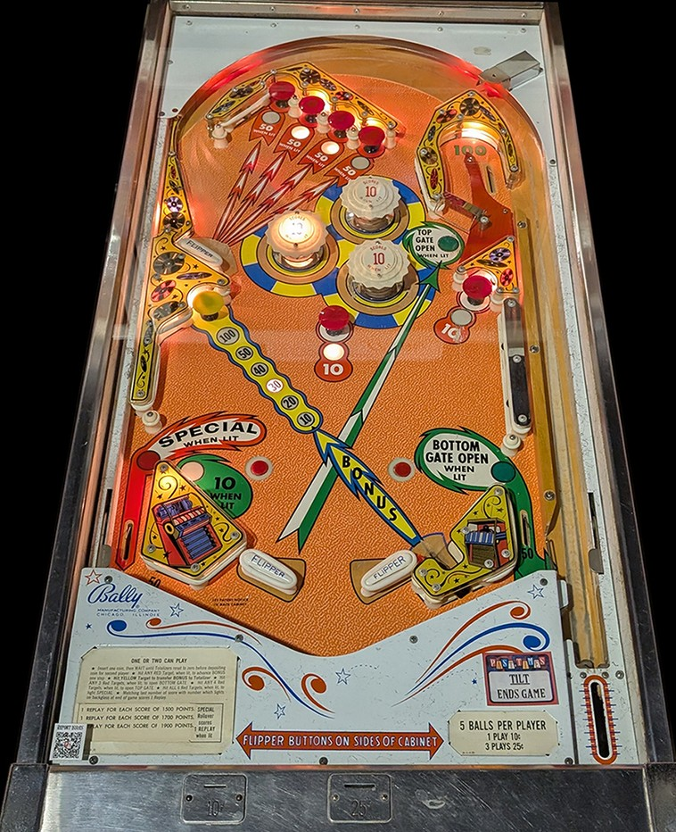

Not to be confused with Disco (Stern Electronics, 1977), Disco Fever (Williams, 1978), or Roller Disco (Gottlieb, 1980).
At the start of each ball, all 6 red mushroom bumpers are lit: 4 in the top left accessible via the upper flipper, 1 in the center of the game, and 1 in the middle right. A plunged ball arcs around the top of the game toward the upper left flipper. Hit a lit red mushroom to unlight it. The four upper red mushrooms score 10 points or 50 when lit. The two lower red mushrooms always score 10.
When no red mushroom bumpers have been hit, the value of the Bonus scored at the yellow mushroom bumper is 10 points. After 1, 2, 3, 4, and 5 red mushroom bumpers have been unlit, the Bonus increases to 20, 30, 40, 50, and 100 points respectively. When the bonus is at least 40, the Bottom Gate in the right out lane is lit, directing the ball to the shooter lane for a replunge. When the Bonus is at least 50, the Top Gate is lit, allowing a ball through the upper right lane, which scores 100 points and a replunge. On some copies of the game, using either gate resets the red mushroom bumpers, but on other copies, it does not. If all 6 red mushroom bumpers are unlit, the left out lane is lit for Special, which can score a free game or 100 points.
Pop bumpers and the left slingshot score 1 point or 10 when lit. They are lit intermittently using a dynamic difficulty system, used in many mid-60s Bally games, where switch hits around the game cause the bumpers and slingshots to turn on and off seemingly randomly, with the game being increasingly less likely to light the pops or slings as the game gives out increasingly more Specials to players. There is no right slingshot; instead, there is a "cannon" kicker, which fires the ball up-left directly at the yellow mushroom bumper which scores the Bonus.
There is no extra ball feature or end of ball bonus (the value of the yellow Bonus mushroom bumper is not awarded for free at the end of the ball). Tilt ends game, but only for the player who tilted.
This guide is largely based on footage taken by Steel Valley Pinball at Past Times Arcade in Girard, OH.
The below picture of Discotek's playfield was taken from the Open Pinball Database.
